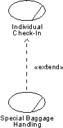

Guidelines:
Extend-Relationship in the Business Use-Case Model
«extend»
Extend-Relationship |
An
extend-relationship is a relationship from an extension use case to a
base use case, specifying how the behavior defined for the extension use
case can be inserted into the behavior defined for the base use case. It is
implicitly inserted in the sense that the extension is not shown in the base
use case. |
Topics
Extend-relationships optionally, or conditionally, add a flow to a business
use case that is already complete in itself. For example, Special Baggage
Handling is inserted into Individual Check-in in cases where the passenger must
go to the special baggage counter.
For comparison, see also Guideline:
Extend-Relationship in the system use-case model.
Once you have outlined the workflow of a business use case, you may find
behavior that is conditional or optional. If this part of the behavior is
substantial you will probably want to describe it separately. The most natural
approach is to describe it in a separate subsection of the workflow
documentation, but an alternative is describing it in a separate business use
case that is an extension to the original business use case.
The latter approach is especially interesting if the extracted part is also
substantial, logically connected, naturally delimited, and if you want to keep
the original business use case simple. Or if the same optional extension is
relevant to several business use cases.
An instance of a business use case that is optionally extended by another use
case first follows the description of the base use case and then, if some
condition is fulfilled, turns to follow the extending business use case’s
description instead. When it reaches the end of the extension use case, it
returns to following the description of the base.

The workflow of the Special Baggage Handling use case is
inserted into the Individual Check-in use case with an extend-relationship.
The business use cases being extended have to be meaningful
and complete in themselves, even if the workflow of the added business use case
is not executed. Most extending business use cases cannot be executed on their
own.
For example, use an extend-relationship to augment a business use case to:
- Model conditional, or optional behavior in a business use case by
describing the workflows in different use cases, where conditional or
optional behavior is distinguished from mandatory behavior.
- Model a complex workflow that seldom occurs.
- Model a separate subflow that is only run under certain conditions.
- Model several different business use cases that can be inserted at a
certain point (the order being governed by the business actor).
Copyright
© 1987 - 2001 Rational Software Corporation
|  Artifacts >
Artifacts >
 Business Modeling Artifact Set >
Business Modeling Artifact Set >
 Business Use-Case Model... >
Business Use-Case Model... >
 Business Use-Case Model >
Business Use-Case Model >
 Guidelines >
Guidelines >